The Walking Dead er ikke bare blevet den mest populære fiktive verden indenfor zombie apokalypser, men en af de mest populære Tv-serier i verdenen. Tv-serien er en adaptation af Robert Kirkmans kritikerroste tegneserie af samme navn.
På trods af at dette fiktive univers foregår i en zombie apokalypse, så bliver ordet "zombie" aldrig brugt. I stedet henviser karakterene til dem som bl.a. walkers, biters, roamers og andet.
Dette kort viser hovedpersonen Rick Grimes rejse i at finde et sikkert opholdssted til ham og hans familie.
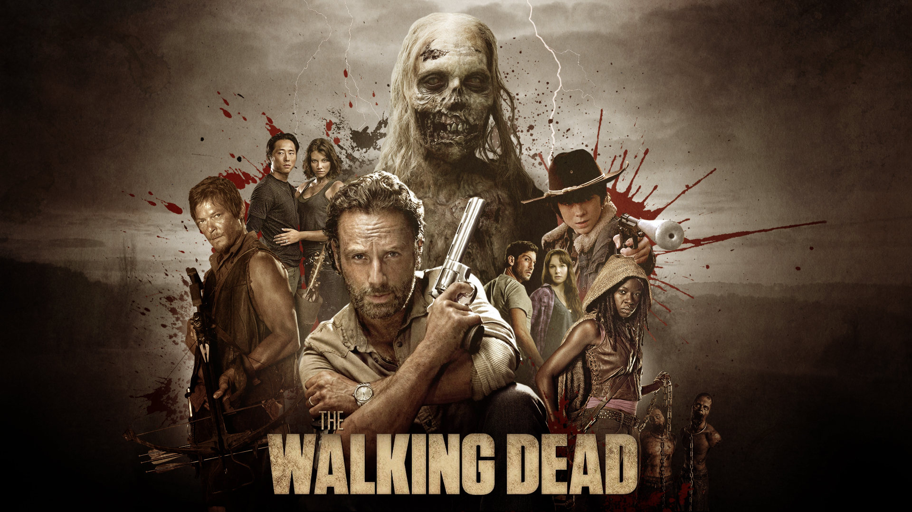Hovedparten af serien foregår i og omkring Atlanta, Georgia i USA. Først i sæson 5 rejser de væk fra denne lokation, da de tager mod Washington D.C. i håbet om en kur til den spredende sygdom.
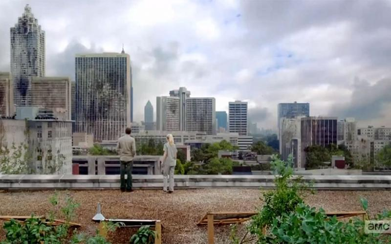I Harrison Memorial Hospital er hvor Ricks historie begynder. Han vågner op fra en koma, efter at han blev skudt på sit arbejde som sherif. Han vågner op til at verdenen er gået under, uden nogen familie eller venner omkring sig. Svækket, går han gennem gangene i hospitalet, og finder meget hurtigt ud af, at de døde ikke længere forbliver døde.
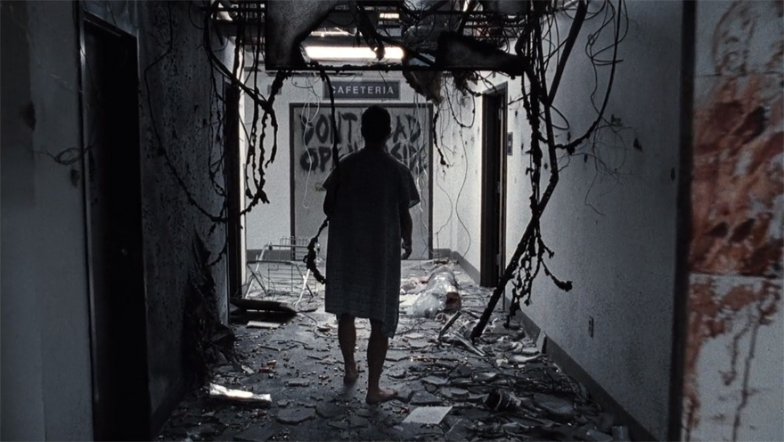Plakaten fra første sæson er ikonisk, og er et perfekt eksempel på den post-apokalyptiske verden vi befinder os i.
Efter Rick returnere til sit hjem, og finder ud af at hans kone og søn ikke længere er der, beslutter han sig for at tage ind til Atlanta, da han regner med at storbyerne er de sikreste steder. Han finder dog hurtigt ud af, at under en zombie apokalypse kommer truslen ikke udefra. Det kommer indefra.
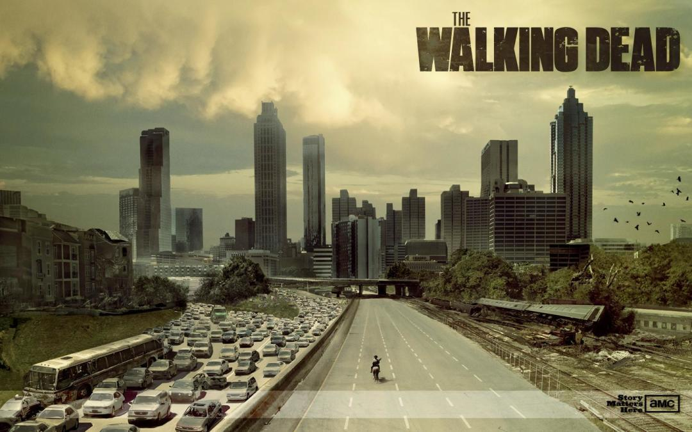Inde i Atlanta bliver han reddet, fra en horde af zombier, af en ung asiatisk mand ved navn Glenn. Gennem ham møder han en lille gruppe af folk som han tilslutter sig. Sammen tager de tilbage til deres lejr ved Bellwood Quarry, hvor han ved et mirakel finder sin bedste ven, kone og søn sammen med den resterende del af gruppen.
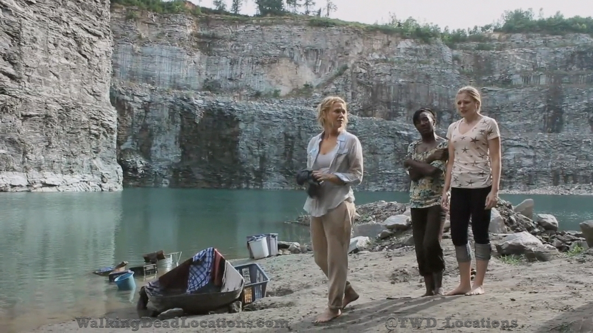Gruppen består af helt ordinære folk i alle aldre, og hvor de intet havde tilfælles i den gamle verden, har de nu alt tilfælles.
Rick finder senere i sæsonen ud af at hans kone Lori og hans bedste ven Shane, har indledt et romantisk forhold eftersom de troede Rick var omkommet på hospitalet. Dette skaber en masse intens drama der kulminerer i anden sæson.
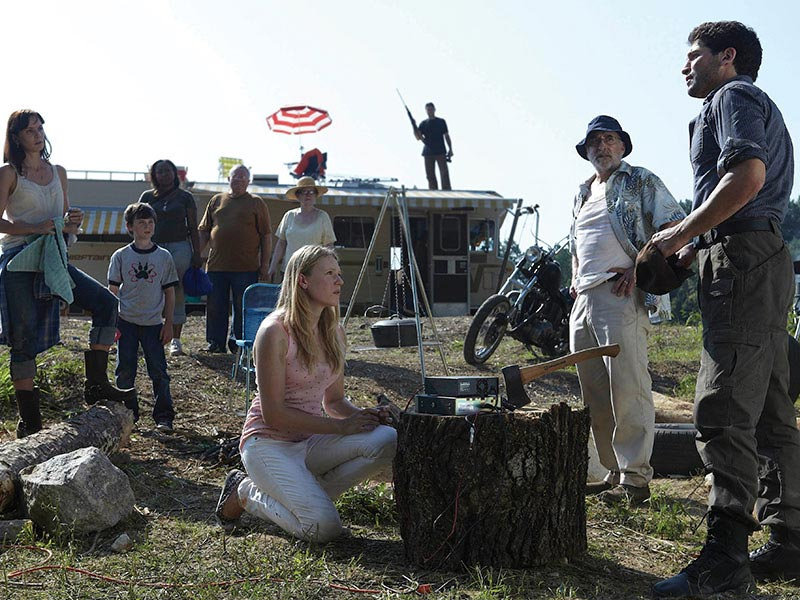Efter et angreb fra zombier og flere dødsfald, blev Ricks gruppe drevet væk fra deres lejr ved Bellwood Quarry. Ved et uheld bliver Ricks søn Carl skudt af en mand ved navn Otis, som var ude og jage efter mad. Otis tager Carl, Rick og resten af gruppen tilbage til en farm, hvor han kan få lægehjælp af dyrelægen Hershel som ejer farmen.
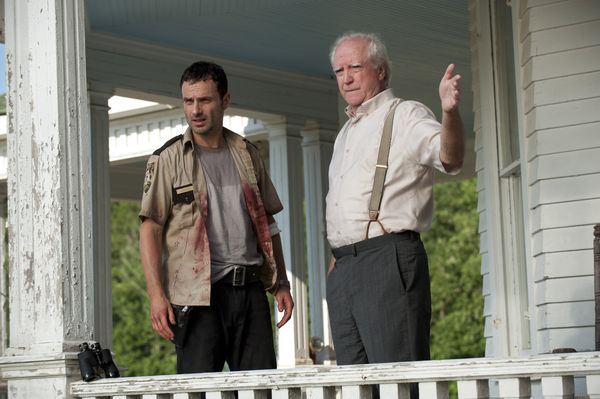Rick og hans gruppe bliver på Hershels farm hele anden sæson, da det virker som et sikkert sted.
Det er også her dramaet mellem Rick, Shane og Lori kulminere. Shane har altid været forelsket i Lori, og efter endelig at have fået hende, kan han ikke håndtere at hun er gået tilbage til Rick. Shane lokker Rick ud i skoven om natten for at dræbe ham. Rick formår dog at være hurtigere på aftrækkeren og dræber Shane.
På grund af larmen fra skuddene, fik Rick og hans gruppe tiltrukket sig en kæmpe horde af zombier mod sig. Samme nat som Shanes død, bliver Hershels farm overrendt og gruppen må igen flygte for sit liv.
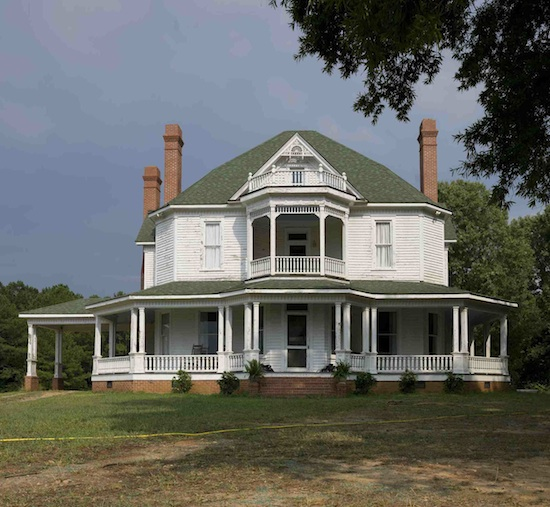Efter faldet af Hershels farm, finder Ricks gruppe fængslet i sæson 3. De beslutter sig af en grund for at slå sig ned her - store hegn og murer. Der er bare et problem. Hele fængslet er overrendt af døde fængselsvagter og fanger.
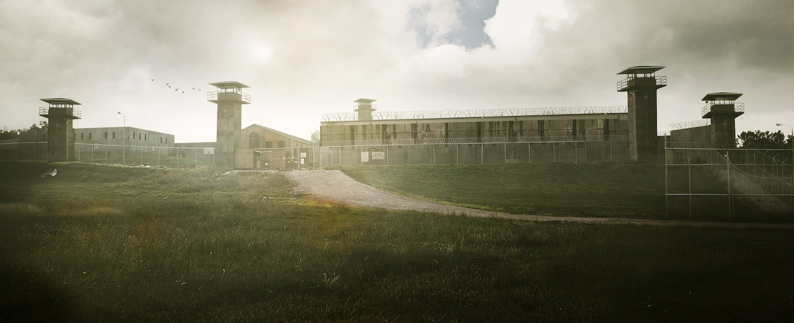Efter at have tømt og sikret fængslet, begynder de at skabe sig et liv der. De ryder op og gør det nogenlunde hjemligt, og derudover gror de afgrøder i fængselsgården, for at have en stabil madressource.
Deres plan om et sikkert liv, bliver dog hurtigt spoleret af en anden gruppe ledet af en mand med storhedsvanvid, der kalder sig selv "The Governor". Han mener at han har større ret til fængslet, og kræver at Ricks gruppe overgiver det til ham. Da Rick og de andre nægter, prøver The Governor at overtage fængslet med magt. Han tager alle sine kampdygtige mænd og kvinder med, og medbringer endda tunge, eksplosive våben og en tank.
Det store slag over fængslet ender i mange dødsfald, og en afsluttende, brutal nævekamp mellem Rick og The Governor, som resultere i The Governors død. Fængslet er dog ikke til at redde, da hegnene er væltet og murene sprængt i stykker. Halvvejs igennem 4. sæson kan gruppen ikke finde hinanden og bliver nødt til at flygte fra de døde.
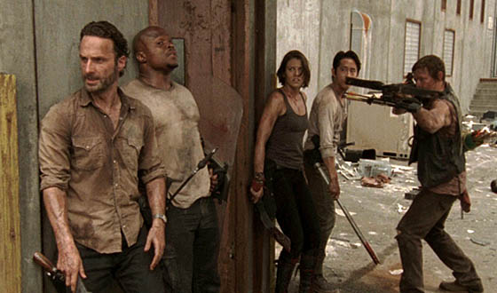Kvæstede, desperate og opdelt efter angrebet på fængslet, leder Rick og hans søn Carl efter et nyt sted at leve. Det samme gør resten af gruppen som også er spredt ud i flere mindre grupper. En efter en finder de skilte der leder til et sted kaldet "Terminus" - et fristed for overlevende. De følger skiltene der leder dem hen ad togskinnerne. I slutningen af 4. sæson ankommer de til Terminus, og udadtil virker det som det perfekte fristed.
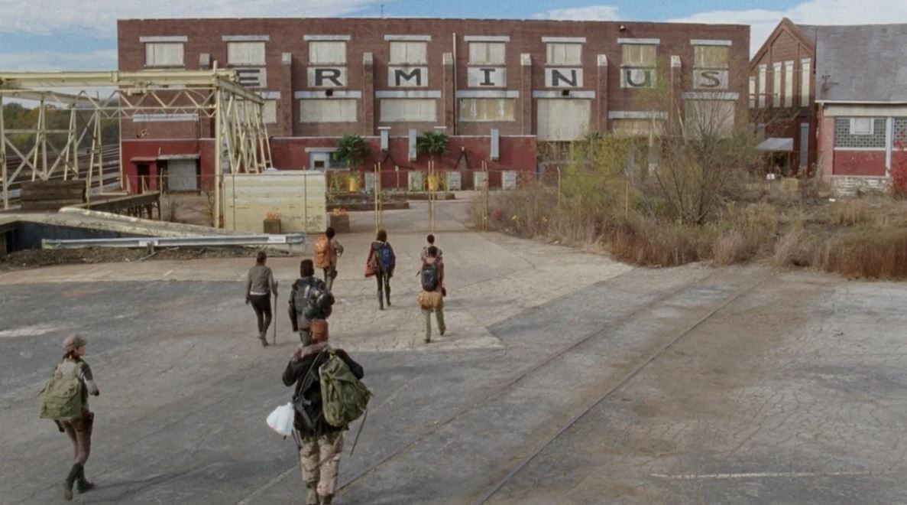Sandheden er dog en helt anden. Fristedet Terminus udgiver sig kun for at være et fristed for overlevende, men i virkeligheden er det hjem til en gruppe mennesker, der har vendt sig til kannibalisme som den bedste overlevelsesmetode. Rick og hans gruppe bliver fanget i en container, og venter på at blive slagtet og tilberedt.
Heldigvis fandt alle i gruppen ikke sammen, inden de ankom til Terminus. Der var stadig én der ikke var ankommet - Carol. Hun er klog nok til at overvåge stedet inden hun går ind i fælden, og mens hun overvåger bygningen, ser hun Rick og de andre blive taget til fange. Hun udtænker en plan der involverer at lede en horde af zombier mod Terminus, og skyder hul i deres hegn med en grenatkaster, hun tog med fra fængslet. Med Carols hjælp flygter gruppen fra Terminus i sæson 5.
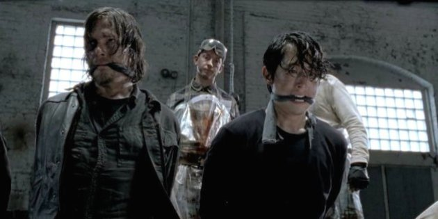Efter flugten fra Terminus finder Rick og hans gruppe en lille gruppe af tre; Abraham, Rosita og Eugene. Abraham og Rosita eskortere Eugene til Washington D.C., da han mener at han har fundett kuren til zombie apocalypsen. Ricks gruppe beslutter sig for at tilslutte sig deres mission.
På vejen til Washington D.C. finder de dog ud af at Eugene har løjet, og at han bare er en simpel high school lærer i fysik og kemi. Abraham mister besindelsen og banker ham. Hen ad vejen lærer gruppen dog at tilgive Eugene, og rejsen til Washington D.C. endte alligevel positivt. På vejen møder de nemlig Aaron som tager dem til Alexandria Safe Zone. Et aflukket kvarter i byen Alexandria syd for Washington D.C.
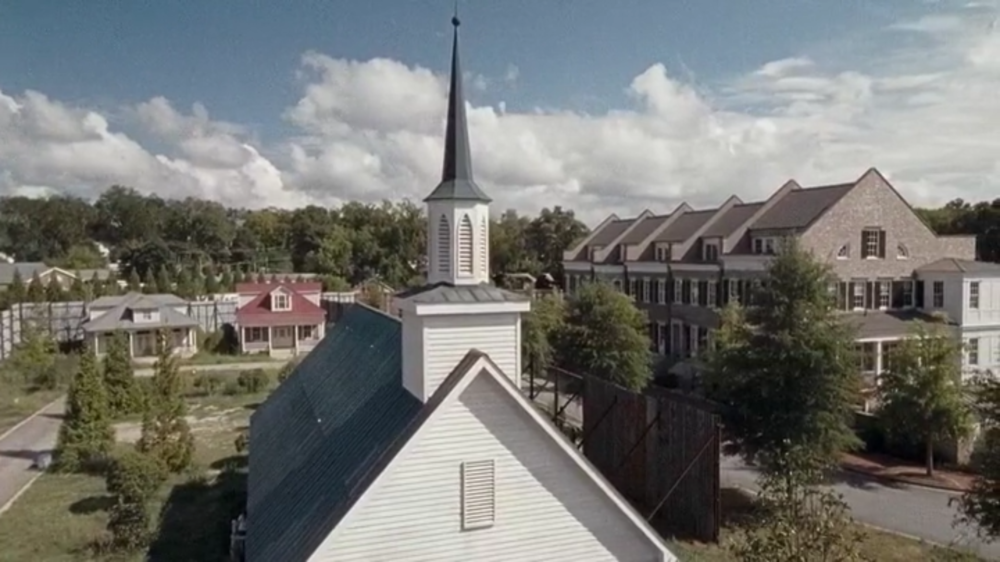Ricks gruppe og indbyggerne i Alexandria Safe Zone opbygger et godt og sikkert hjem med høje mure, og her lever de sikkert indtil de møder den næste store skurk - Negan og hans Saviors.
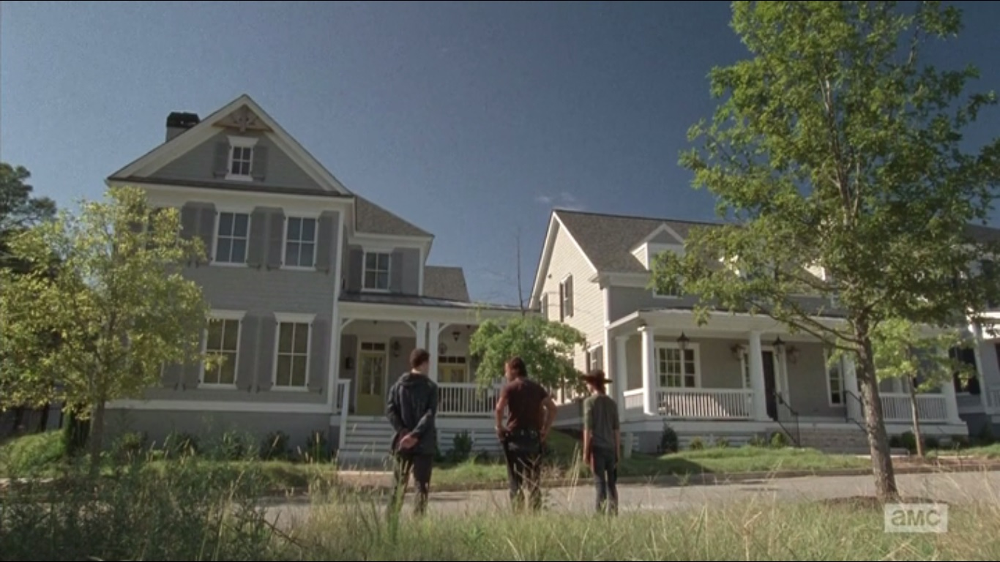